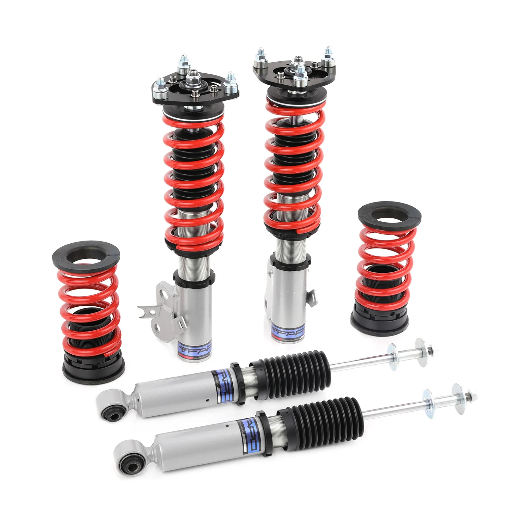

1 / 16Zawieszenie gwintowane do Honda Civic 8th Gen 2006-2011 FD/FA Acura CSX PS002010
Zastosowanie: Honda Civic 8. generacji 2006-2011 FD/FA/FG Acura CSX 2006-2011 Zawartość zestawu: Gwinty przednie x 2 szt Gwinty tylne x 2 szt Klucz x 2 szt Cechy produktu: Konstrukcja amortyzatora jednorurowego zapewnia większą pojemność oleju i gazu Regulowana wysokość jazdy Regulowane napięcie sprężyny wstępnej Sprężyna o dużej wytrzymałości na rozciąganie, testowana w sposób ciągły przez 600 000 cykli przy znieks…
Application: Honda Civic 8th Gen 2006-2011 FD/FA/FG Acura CSX 2006-2011 Package Includes: Front coilovers x 2 pcs Rear coilovers x 2 pcs Wrench x 2 pcs Features: Mono-tube shock design provides larger capacity of oil and gas Adjustable ride height Adjustable pre-load spring tension Hi Tensile performance spring, tested continuously over 600,000 cycles with less than 0.04% distortion; special surface treatment improves durability and performance All inserts come with fitted rubber boots to protect the damper and keep clean Improves handling performance without sacrificing comfortable ride Fast and affordable way to easily upgrade your car's appearance Easy installation with the right tools Ideal for track, drift, fast road, and daily driving Accessories shown in photos are included Default 1-year warranty for any manufacturing defect, upgrade to 2 years with our Extended Warranty Program Technical Specifications: Spring rate Front: 6 kg/mm Spring rate Rear: 10 kg/mm Adjustable height: Yes Adjustable camber plate: Only Front coilovers Adjustable damper: Non Adjustable Damper Force Warranty All items carry a standard 1-year warranty from the date of purchase. Proof of purchase is required; please provide your order number to expedite warranty claims. To speed up the claim process, submit images and detailed documentation. Pictures and videos are usually sufficient; defective items typically do not need to be returned. Occasionally, we may request additional information to confirm the issue and improve support.
1599,99 PLN
Opis produktu
Zastosowanie:
- Honda Civic 8. generacji 2006-2011 FD/FA/FG
- Acura CSX 2006-2011
Zawartość zestawu:
- Gwinty przednie x 2 szt
- Gwinty tylne x 2 szt
- Klucz x 2 szt
Cechy produktu:
- Konstrukcja amortyzatora jednorurowego zapewnia większą pojemność oleju i gazu
- Regulowana wysokość jazdy
- Regulowane napięcie sprężyny wstępnej
- Sprężyna o dużej wytrzymałości na rozciąganie, testowana w sposób ciągły przez 600 000 cykli przy zniekształceniu mniejszym niż 0,04%; specjalna obróbka powierzchni poprawia trwałość i wydajność
- Do wszystkich wkładek dołączone są gumowe buty chroniące amortyzator i utrzymujące je w czystości
- Poprawia właściwości jezdne bez utraty komfortu jazdy
- Szybki i niedrogi sposób na łatwą poprawę wyglądu Twojego samochodu
- Łatwa instalacja przy użyciu odpowiednich narzędzi
- Odpowiedni na tor, do driftu, szybkiej jazdy drogowej i codziennego użytkowania
- W zestawie akcesoria widoczne na zdjęciach
- Standardowa roczna gwarancja na każdą wadę produkcyjną, możliwość rozszerzenia do 2 lat w ramach naszego programu rozszerzonej gwarancji
Dane techniczne:
- Twardość sprężyny Przód: 6 kg/mm
- Twardość sprężyny Tył: 10 kg/mm
- Regulowana wysokość: Tak
- Regulowana płyta pochylenia: tylko przednie gwinty
- Regulowany amortyzator: Nieregulowana siła amortyzatora
Gwarancja
Wszystkie produkty objęte są standardową roczną gwarancją liczoną od daty zakupu. Wymagany jest dowód zakupu; prosimy o podanie numeru zamówienia, aby przyspieszyć realizację roszczeń gwarancyjnych. Aby przyspieszyć proces reklamacji, prześlij zdjęcia i szczegółową dokumentację. Zwykle wystarczą zdjęcia i filmy; Wadliwe elementy zazwyczaj nie wymagają zwrotu. Czasami możemy poprosić o dodatkowe informacje, aby potwierdzić problem i ulepszyć obsługę.
Application:
- Honda Civic 8th Gen 2006-2011 FD/FA/FG
- Acura CSX 2006-2011
Package Includes:
- Front coilovers x 2 pcs
- Rear coilovers x 2 pcs
- Wrench x 2 pcs
Features:
- Mono-tube shock design provides larger capacity of oil and gas
- Adjustable ride height
- Adjustable pre-load spring tension
- Hi Tensile performance spring, tested continuously over 600,000 cycles with less than 0.04% distortion; special surface treatment improves durability and performance
- All inserts come with fitted rubber boots to protect the damper and keep clean
- Improves handling performance without sacrificing comfortable ride
- Fast and affordable way to easily upgrade your car's appearance
- Easy installation with the right tools
- Ideal for track, drift, fast road, and daily driving
- Accessories shown in photos are included
- Default 1-year warranty for any manufacturing defect, upgrade to 2 years with our Extended Warranty Program
Technical Specifications:
- Spring rate Front: 6 kg/mm
- Spring rate Rear: 10 kg/mm
- Adjustable height: Yes
- Adjustable camber plate: Only Front coilovers
- Adjustable damper: Non Adjustable Damper Force
Warranty
All items carry a standard 1-year warranty from the date of purchase. Proof of purchase is required; please provide your order number to expedite warranty claims. To speed up the claim process, submit images and detailed documentation. Pictures and videos are usually sufficient; defective items typically do not need to be returned. Occasionally, we may request additional information to confirm the issue and improve support.
FAPO Polska
Ten produkt obsługujemy lokalnie
Autoryzowana obsługa
FAPO Polska prowadzi katalog, kontakt i zamówienia bez odsyłania klienta do zewnętrznych sklepów.
Dobór po aucie
Sprawdzamy dopasowanie produktu do pojazdu, rocznika i wersji przed finalizacją zamówienia.
Wsparcie po zakupie
Masz kontakt w Polsce w sprawach zamówień, wysyłki, gwarancji i zwrotów.